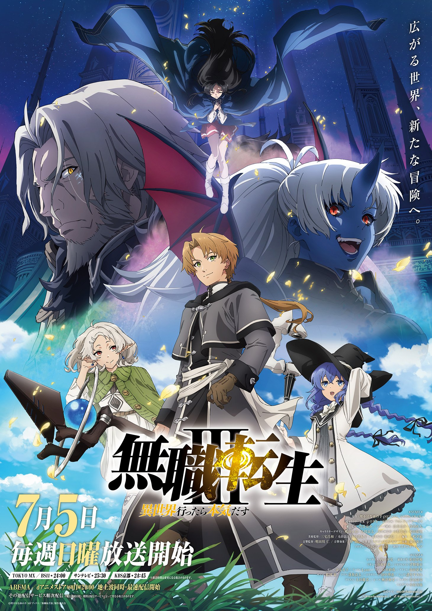
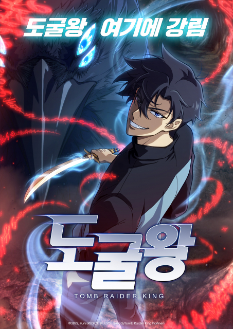
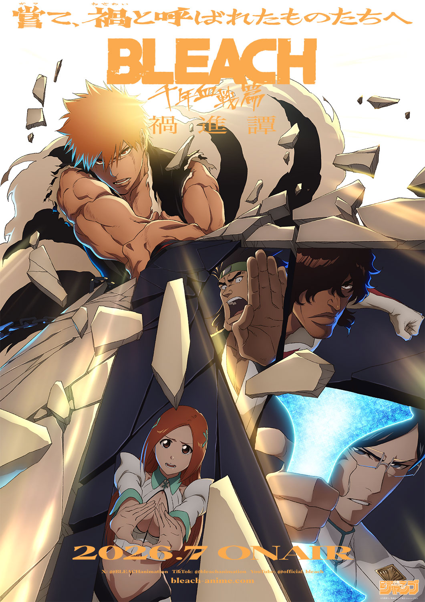
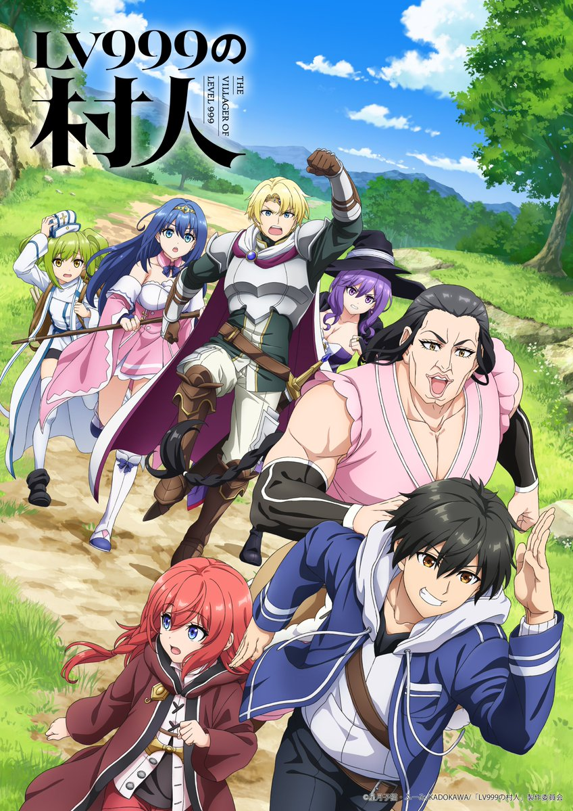
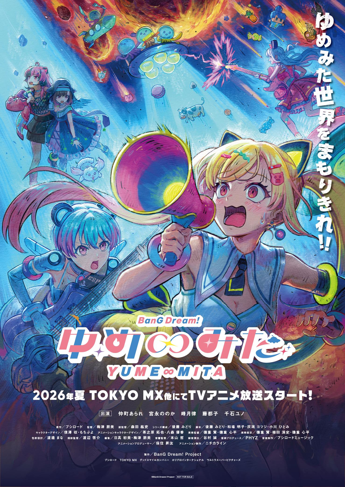

2026년 3분기 신작 애니 추천 — 7월 시작 다섯 편만 골랐어요
7월 초부터 하순까지 2026년 3분기 신작 애니가 줄줄이 시작되는데요, 나무위키 편성표만 봐도 7월 한 달에만 신작이 수십 편이더라고요. 그 안에서 뭘 먼저 챙겨야 할지 고르기가 오히려 더 어려워서, 저희 부부가 직접 정보를 하나하나 확인해가며 진짜 볼 만하다고 판단한 다섯 편만 추려봤어요. 이세계 판타지부터 한국 웹소설 원작, 오래 이어온 시리즈의 완결편까지 결이 서로 달라서, 취향대로 골라 보시라고 성격별로 나눠 정리했어요.
2026년 3분기 신작 애니, 이런 기준으로 골랐어요
공식 순위나 인기투표가 아니라, ① 원작 인지도(이미 팬층이 두꺼운 작품인가) ② 국내 화제성(한국 독자·시청자 사이에서 실제로 언급이 많은가) ③ 완결·시즌 전환처럼 시기적으로 의미가 있는가 ④ 제작진·성우 라인업이 눈에 띄는가, 이 네 가지를 기준으로 저희가 직접 고른 주관적인 다섯 편이에요. 정보는 전부 공식 발표·나무위키·해외 애니 매체 교차 확인 기준입니다.

무직전생 Ⅲ 공식 키비주얼 — 7월 5일 일요일 첫 방영
이미지: 스튜디오 바인드·무직전생 제작위원회 공식 비주얼
1편추천 ①무직전생 Ⅲ ~이세계에 갔으면 최선을 다한다~
이번 3분기에서 화제성으로는 가장 앞자리에 두고 싶은 작품이에요. 이세계 전생물 장르를 대표하는 시리즈 중 하나인데, 2기에서 끊겼던 이야기가 원작 14권 분량부터 다시 이어진다고 하더라고요. 페르기우스의 공중 요새를 찾아가는 여정에서 벌어지는 사건이 중심이고, 이번 시즌엔 에리스의 수행 이야기도 함께 그려질 예정이라고 해요. 감독은 2기 후반부를 맡았던 시부야 료스케가 이어서 맡고, 캐릭터 디자인·음악 같은 핵심 제작진도 상당수 그대로 이어져서 전작의 분위기를 기대해도 좋을 것 같아요. 기존 팬이라면 놓치기 아까운 시즌인데, 애니플러스에서 한일 동시 자막 방영도 확정된 상태라 국내 접근성도 좋습니다.
이 작품은 스토리 연속성이 강해서 1·2기를 안 보고 바로 들어가면 몰입이 어려울 수 있어요. 여름 전에 정주행부터 챙겨두는 걸 추천해요.
추천 ②도굴왕 (Tomb Raider King)
이번 목록에서 유일하게 한국 웹소설이 원작인 작품이라 따로 소개하고 싶었어요. 신비한 힘이 깃든 유물을 찾아 유적을 파헤치는 주인공의 이야기인데, 카카오페이지·카카오웹툰에서 오랫동안 인기를 끌어온 IP예요. 한국 제작사가 만들고 일본 후지TV에서 한일 동시 방영까지 확정되면서 화제를 모았어요. 오프닝 주제가를 그룹 QWER이 맡았다는 것도 국내 독자에게는 눈에 띄는 포인트예요. 글로벌로는 크런치롤 스트리밍도 함께 진행돼서, 국내 웹툰 IP가 해외로 뻗어 나가는 사례로도 지켜볼 만해요.
국내 웹소설 원작이 이렇게 한일 동시 방영으로 나오는 경우가 흔치 않아서 저는 이 작품이 제일 반가웠어요. 첫 화 반응을 보고 계속 챙겨볼지 정하려고요.

도굴왕 애니메이션 티저 포스터
이미지: 스튜디오 이크·Tomb Raider King Partners 제공(뉴스와이어 보도자료 캡처)
3편추천 ③블리치: 천년혈전 편 — 화진담
이건 완전 신작은 아니지만, 천년혈전 편의 마지막 쿨이라 3분기에서 상징성이 가장 큰 작품이라 넣었어요. 부제 '화진담'으로 각성한 쿠로사키 이치고와 유하바하의 최종 결전이 그려질 예정이에요. TV 정식 방영은 7월 25일부터이고, 그에 앞서 6월 말부터 7월 중순까지 1~3화 분량을 극장에서 먼저 선보이는 선행 상영회가 진행됐을 만큼 기대치가 높은 완결편입니다. 시리즈를 오래 따라온 독자라면 이번 3분기가 사실상 완결을 보는 시즌이에요.
4쿨은 이전 파트에서 이어지는 완결편이라 1~3쿨을 안 봤다면 이번 시즌 전에 미리 정리해두는 게 훨씬 몰입하기 좋아요.

블리치 천년혈전 편: 화진담 공식 키비주얼 — 7월 25일 TV 방영
이미지: 스튜디오 피에로·주간 소년 점프 공식 비주얼
4편추천 ④LV999의 마을사람
가장 약한 직업 '마을사람'인데도 레벨 999를 찍어버린 주인공 카가미 코지가 마왕의 딸 앨리스를 만나면서, 인간과 마족이 함께 살아갈 길을 찾아 떠나는 이세계 판타지예요. 원작 라이트노벨은 누적 발행부수가 380만 부를 넘었다고 할 만큼 팬층이 두꺼운 작품이라, 이세계물 신작 중에서는 기대치가 높은 편이에요. 애니메이션 제작은 브레인즈 베이스가 맡았고, 국내에서도 웹소설·웹툰으로 먼저 소개돼 있어서 원작을 접한 독자라면 더 반가울 시즌이에요.
인간과 마족의 경계를 다루는 설정이 뻔한 먼치킨물로 안 흐르고 어디까지 진지하게 풀어낼지가 저는 궁금하더라고요.

LV999의 마을사람 공식 키비주얼
이미지: 브레인즈 베이스·KADOKAWA·LV999의 마을사람 제작위원회
5편추천 ⑤BanG Dream! Yume∞Mita(유메미타)
밴드 육성 프랜차이즈 '반드림!'의 새 세대 밴드 '무겐다이 뮤타입'을 주인공으로 한 신작이에요. 애니메이션 제작은 산지겐이 새로 만든 스튜디오 브랜드 니치카라인이 맡았고, 감독은 우메즈 토모미가 맡았다고 해요. 밴드 소재 미디어믹스는 이미 국내에서도 팬층이 형성돼 있는 장르라, 반드림 시리즈를 즐겨온 분들에게는 놓치기 아쉬운 신작이에요. 첫 방영일에 1~3화를 한 번에 방송하는 특별 편성도 예고돼 있어서, 시작부터 힘을 준 티가 나는 작품이에요.
기존 반드림 시리즈를 몰라도 새 밴드 위주로 시작하는 구성이라 이번 시즌부터 입문하기에 진입장벽이 낮은 편이에요.

BanG Dream! Yume∞Mita 공식 키비주얼
이미지: 니치카라인·BanG Dream! Project 공식 비주얼
· 🌿 ·
2026년 3분기 신작 애니, 자주 묻는 질문
Q이 다섯 편 말고도 7월에 챙길 만한 신작이 더 있나요?
7월 한 달에만 신작이 워낙 많아서(나무위키 집계 기준 수십 편) 이 글에서 전부 다루긴 어려웠어요. 여기 소개한 다섯 편은 원작 인지도·국내 화제성 기준으로 저희가 우선순위를 둔 것이고, 이세계·판타지 장르를 더 좋아하신다면 같은 시즌에 시작하는 다른 라이트노벨 원작 신작들도 함께 살펴보시는 걸 추천해요.
Q한국에서는 이 작품들을 어디서 볼 수 있나요?
무직전생 3기와 도굴왕은 애니플러스에서 한일 동시 자막 방영이 공식 확정됐어요. 블리치·LV999의 마을사람·BanG Dream 유메미타는 각 작품 공식 발표에 따라 국내 방영·스트리밍처가 순차 공개되니, 방영 임박 시점에 각 플랫폼 편성표를 다시 한 번 확인하시는 걸 추천해요.
Q완결편인 블리치 화진담도 이 목록에 넣은 이유가 있나요?
엄밀히는 완전 신작이 아니라 천년혈전 편의 네 번째이자 마지막 쿨이에요. 그래도 3분기 안에 방영이 시작되고, 오래 이어온 대형 시리즈가 이 시즌에 결말을 맺는다는 상징성이 커서 저희 부부 기준 '이번 분기에 꼭 챙길 작품' 다섯 편 안에 포함했어요. 순수 신작만 보고 싶으신 분은 나머지 네 편 위주로 보셔도 좋아요.
정리하자면 이번 3분기는 무직전생 3기·도굴왕·블리치 화진담·LV999의 마을사람·BanG Dream 유메미타, 이 다섯 편이면 저희 부부 기준으로는 여름 시청 목록이 꽉 찰 것 같아요. 완결편도 있고 신작도 있고 국내 IP도 있어서 골고루 챙겨보는 재미가 있을 시즌이에요. 다들 이번 여름엔 뭐부터 보실지 궁금하네요.